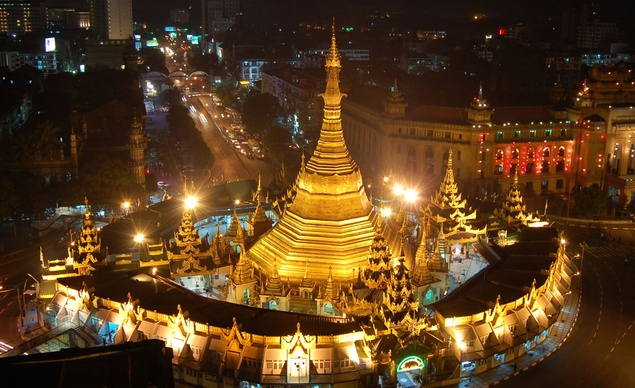
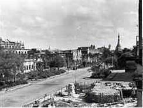
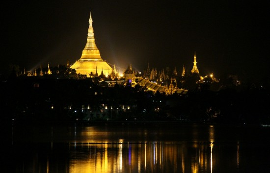
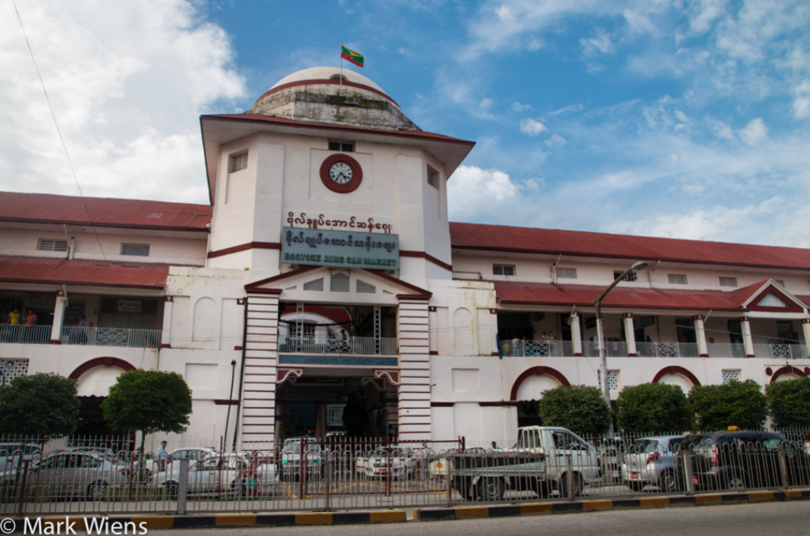
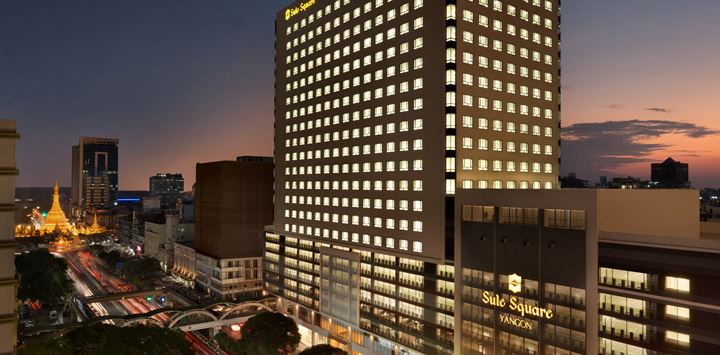

Yangon
.jpg)

Yangon
formerly known as Rangoon,
was the capital of the Yangon Region of Myanmar, also known as Burma. Yangon served as the capital of Myanmar until 2006, when the military government relocated the capital to the purpose-built city of Naypyidawin central Myanmar. With over 7 million people, Yangon is Myanmar's largest city and its most important commercial centre.
Yangon boasts the largest number of colonial-era buildings in Southeast Asia, and has a unique colonial-era urban core that is remarkably intact. The colonial-era commercial core is centred around the Sule Pagoda, which is reputed to be over 2,000 years old. The city is also home to the gilded Shwedagon Pagoda – Myanmar's most sacred Buddhist pagoda. The mausoleum of the last Mughal Emperor is located in Yangon, where he had been exiled following the Indian Mutiny of 1857.
Yangon suffers from deeply inadequate infrastructure, especially compared to other major cities in Southeast Asia. Though many historic residential and commercial buildings have been renovated throughout central Yangon, most satellite towns that ring the city continue to be profoundly impoverished and lack basic infrastructure.
The name "Yangon" is derived from the combination of the Burmese words yan and koun which mean "enemies" and "run out of", respectively. This word combination is commonly translated as "End of Strife".The city's colonial era name, "Rangoon", likely is derived from the Anglicization of the Arakanese pronunciation of "Yangon"
.jpg)
.JPG)
Yangon was founded as Dagon in the early 11th century (c.?1028–1043) by the Mon, who dominated Lower Burma at that time. Dagon was a small fishing village centred about the Shwedagon Pagoda. In 1755, King Alaungpaya conquered Dagon, renamed it "Yangon", and added settlements around Dagon. The British captured Yangon during the First Anglo-Burmese War (1824–26), but returned it to Burmese administration after the war. The city was destroyed by a fire in 1841. The British seized Yangon and all of Lower Burma in the Second Anglo-Burmese War of 1852, and subsequently transformed Yangon into the commercial and political hub of British Burma. In 1853, the British moved the capital of Burma from Moulmein (present-day Mawlamyine) to Yangon. Yangon is also the place where the British sent Bahadur Shah II, the last Mughal emperor, to live after the Indian Rebellion of 1857. Based on the design by army engineer Lt. Alexander Fraser, the British constructed a new city on a grid plan on delta land, bounded to the east by the Pazundaung Creek and to the south and west by the Yangon River. Yangon became the capital of all British-ruled Burma after the British had captured Upper Burma in the Third Anglo-Burmese War of 1885. By the 1890s Yangon's increasing population and commerce gave birth to prosperous residential suburbs to the north of Royal Lake(Kandawgyi) and Inya Lake. The British also established hospitals including Rangoon General Hospital and colleges including Rangoon University.

.jpg)
Colonial Yangon, with its spacious parks and lakes and mix of modern buildings and traditional wooden architecture, was known as "the garden city of the East." By the early 20th century, Yangon had public services and infrastructure on par with London.
Before World War II, about 55% of Yangon's population of 500,000 was Indian or South Asian, and only about a third was Bamar(Burman). Karens, the Chinese, the Anglo-Burmese and others made up the rest.
After World War I, Yangon became the epicentre of Burmese independence movement, with leftist Rangoon University students leading the way. Three nationwide strikes against the British Empire in 1920, 1936 and 1938 all began in Yangon. Yangon was under Japanese occupation (1942–45), and incurred heavy damage during World War II. The city was retaken by the Allies in May 1945.
Yangon became the capital of the Union of Burma on 4 January 1948 when the country regained independence from the British Empire.


Soon after Burma's independence in 1948, many colonial names of streets and parks were changed to more nationalistic Burmese names. In 1989, the current military juntachanged the city's English name to "Yangon", along with many other changes in English transliteration of Burmese names. (The changes have not been accepted by many Burmese who consider the junta unfit to make such changes, nor by many publications, news bureaus including, most notably, the BBC and foreign nations including the United Kingdom and United States.) Since independence, Yangon has expanded outwards. Successive governments have built satellite towns such as Thaketa, North Okkalapa and South Okkalapa in the 1950s to Hlaingthaya, Shwepyitha and South Dagon in the 1980s. Today, Greater Yangon encompasses an area covering nearly 600 square kilometres (230 sq mi).
During Ne Win's isolationist rule (1962–88), Yangon's infrastructure deteriorated through poor maintenance and did not keep up with its increasing population. In the 1990s, the current military government's more open market policies attracted domestic and foreign investment, bringing a modicum of modernity to the city's infrastructure. Some inner city residents were forcibly relocated to new satellite towns. Many colonial-period buildings were demolished to make way for high-rise hotels, office buildings, and shopping malls, leading the city government to place about 200 notable colonial-period buildings under the Yangon City Heritage List in 1996. Major building programs have resulted in six new bridges and five new highways linking the city to its industrial back country. Still, much of Yangon remains without basic municipal services such as 24-hour electricity and regular garbage collection.

.jpg)
Yangon has become much more indigenous Burmese in its ethnic make-up since independence. After independence, many South Asians and Anglo-Burmese left. Many more South Asians were forced to leave during the 1960s by Ne Win's xenophobic government.[14] Nevertheless, sizeable South Asian and Chinese communities still exist in Yangon. The Anglo-Burmese have effectively disappeared, having left the country or intermarried with other Burmese groups.
Yangon was the centre of major anti-government protests in 1974, 1988 and 2007. The 1988 People Power uprising resulted in the deaths of hundreds, if not thousands of Burmese civilians, many in Yangoon where hundreds of thousands of people flooded into the streets of the then capital city. The Saffron Revolution saw mass shootings and the use of crematoria in Yangoon by the Burmese government to erase evidence of their crimes against monks, unarmed protesters, journalists and students
The city's streets saw bloodshed each time as protesters were gunned down by the government.
 Facebook:
Facebook:  Email:
Email:  Browser:
Browser:  Phone:
Phone:  Address:
Address: